หมวดเครื่องมือวัด · WYNNTOOLS (วินส์ทูลส์)
เครื่องมือสำหรับการวัด WYNNTOOLS
เครื่องมือวัดสำหรับงานก่อสร้างและงานไม้ วัดระดับน้ำอลูมิเนียมทั้งแบบธรรมดาและแบบมีแถบแม่เหล็กยึดติดเหล็กได้ ไม้บรรทัดพับอลูมิเนียม 600 มม. ฉากผสมปรับองศา ฉากสามเหลี่ยมสแตนเลส และลูกดิ่งแบบมีล้อเก็บสาย
📋 15 รายการ
✔ ผู้นำเข้าโดยตรง
🏷️ ราคาปลีก-ส่ง
🚚 ส่งทั่วไทย
เครื่องมือสำหรับการวัด — 15 รายการ
วัดระดับน้ำแม่เหล็ก อลูมิเนียม พับได้ 600ม. ALUMINUM ALLOY FOLDING HORIZONTAL RULER 1 รายการ
- ที่วัดระดับน้ำคู่ วัดทั้งแนวตั้ง-นอน ใช้กับงานปูกระเบื้อง หินอ่อน ระเบียง และอื่นๆ
- โครงสร้างอลูมิเนียม ระดับน้ำความแม่นยำสูง เชื่อถือได้
- วัดได้เที่ยงตรง แม่นยำ
- เคลือบ Epoxy
- ระดับน้ำใหญ่ ชัด และแม่นยำ
- แม่เหล็กแรงมากกว่าปกติ 2 เท่า
- จุดเด่น: แถบแม่เหล็กยึดติดด้านล่าง, กางได้ 90°
| รูป | รหัส | ชื่อสินค้า | ขนาด | จำนวน/ลัง |
|---|---|---|---|---|
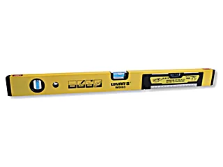 |
W0083 | วัดระดับน้ำแม่เหล็ก อลูมิเนียม พับได้ 600 มม.ALUMINUM ALLOY FOLDING HORIZONTAL RULER | 600mm | 30 |
ฉากวัดระดับน้ำมินิ 100มม. MINI MAGNETIC HORIZONTAL RULER 1 รายการ
- มีแถบแม่เหล็ก
- ขนาดเล็กพกพาง่าย เที่ยงตรงทั้งระดับน้ำ และระดับตั้งฉาก
| รูป | รหัส | ชื่อสินค้า | จำนวน/ลัง |
|---|---|---|---|
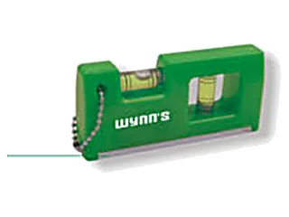 |
W0081 | 160 |
ฉากวัดระดับน้ำ 2ฟุต ALUMINIUM LEVEL 1 รายการ
วัสดุ: A-ALLOY เหล็กอลูมิเนียมอัลลอย
- เพิ่มช่องด้ามจับ ให้ใช้งานง่าย
- เหมาะกับงานวิศวกรรมโยธา งานก่อสร้าง การติดตั้งเครื่องจักร และการออกแบบภายใน โดยใช้วัดระดับน้ำ ระดับตั้งฉาก และวัดความชัน
- โครงสร้างอลูมิเนียม วัดได้เที่ยงตรง แม่นยำ
| รูป | รหัส | ชื่อสินค้า | ขนาด | จำนวน/ลัง | วัสดุ |
|---|---|---|---|---|---|
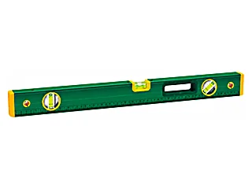 |
W0091D | 600mm | 50 | A-ALLOY |
วัดระดับน้ำแม่เหล็ก 230มม. MINI LEVEL RULER 1 รายการ
- ทำจากวัสดุ ABS โดยใช้ยางหุ้มป้องกันการกระแทก
- ที่วัดระดับน้ำ 3 ชิ้น แนวตั้ง แนวนอน และแบบตะแคง
- ความแม่นยำสูง เชื่อถือได้
- จุดเด่น: ที่คล้อง, แถบแม่เหล็กยึดติดด้านล่าง
| รูป | รหัส | ชื่อสินค้า | ขนาด | จำนวน/ลัง |
|---|---|---|---|---|
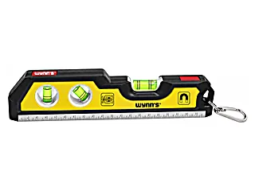 |
W0082 | 230mm | 100 |
ฉากวัดระดับน้ำ แม่เหล็ก 2ฟุต ALUMINIUM LEVEL 1 รายการ
วัสดุ: A-ALLOY เหล็กอลูมิเนียมอัลลอย
- ทำจากเหล็กอลูมิเนียมอัลลอยOxidized ระดับน้ำวัสดุหนาพิเศษ ทนทาน
- ฉากวัดระดับ 180° สามารถใช้เวลากลางคืนได้ ใช้ฟลูออเรสเซนต์ เรืองแสง
- ออกแบบให้ติดแม่เหล็ก เพิ่มแรงดูด
- จุดเด่น: แม่เหล็กด้านล่าง
| รูป | รหัส | ชื่อสินค้า | ขนาด | จำนวน/ลัง | วัสดุ |
|---|---|---|---|---|---|
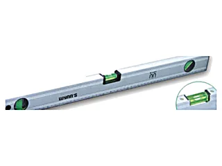 |
W0093D | 600mm | 50 | A-ALLOY |
ฉากวัดระดับน้ำแม่เหล็ก 2ฟุต อย่างดี HIGH GRADE ALUMINIUM ALLOY LEVEL 1 รายการ
วัสดุ: A-ALLOY เหล็กอลูมิเนียมอัลลอย
- วัดได้เที่ยงตรง โอกาสวัดผิดต่ำมากๆ
- เคลือบ Epoxy สวย ทำความสะอาดง่าย
- มีระดับน้ำทั้งหมด 4 ชิ้น วัดแม่นยำ
- แม่เหล็กแรงมากกว่าปกติ 2 เท่า
| รูป | รหัส | ชื่อสินค้า | ขนาด | จำนวน/ลัง | วัสดุ |
|---|---|---|---|---|---|
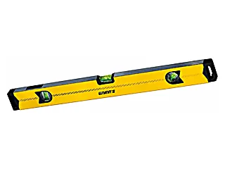 |
W0094A-25B | 600mm | 40 | A-ALLOY |
วัดระดับน้ำตอร์ปิโดแม่เหล็ก 225มม. MAGNETIC FISH TORPEDO TYPE LEVEL 1 รายการ
- ทำจากวัสดุ ABS โดยใช้โครงอลูมิเนียม
- มีแม่เหล็ก
- วัดระดับน้ำหลายชิ้น แม่นยำ
| รูป | รหัส | ชื่อสินค้า | ขนาด | จำนวน/ลัง |
|---|---|---|---|---|
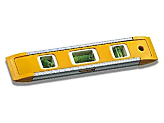 |
W0332B | 225mm | 100 |
ฉากผสม วัดระดับน้ำ COMBINATION JOINERS SQUARE 1 รายการ
วัสดุ: STAINLESS เหล็กสแตนเลส
- ทำจากเหล็กสแตนเลส 2Cr13 แข็งแรงHRC30 ขึ้นไป
- ด้ามจับZincอัลลอย มีที่วัดระดับน้ำ และเข็มขีดงาน
- ยิงสเกลด้วยเลเซอร์ ตัวเลขชัด วัดเที่ยงตรง ไม่สึก
| รูป | รหัส | ชื่อสินค้า | ขนาด | จำนวน/ลัง | วัสดุ |
|---|---|---|---|---|---|
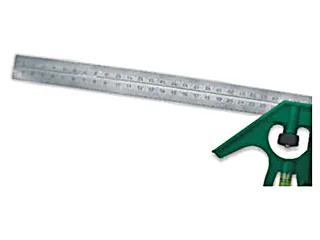 |
W0266B | 30cm | 10/60 | STAINLESS |
ลูกดิ่ง พร้อมตลับแม่เหล็ก ล็อคอัตโนมัติ HIGH CLASS PLUMB BOB 2 รายการ
- แม่เหล็กแรงดูดสูง สามารถติดกับพื้นผิวโลหะโดยอัตโนมัติ
- ฟังก์ชั่นล็อคอัตโนมัติ สามารถใช้ติดเข้ากับแผ่นไม้หรือวัสดุแผ่นบางอื่นๆ
- กำหนดตำแหน่งได้อย่างรวดเร็ว เส้นตัดที่ราบเรียบ ใช้งานง่าย
| รูป | รหัส | ชื่อสินค้า | ขนาด | จำนวน/ลัง |
|---|---|---|---|---|
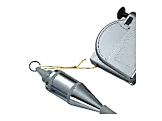 |
W0235 | ลูกดิ่ง พร้อมตลับแม่เหล็ก ล็อคอัตโนมัติHIGH CLASS PLUMB BOB ทุกเบอร์ในตระกูลนี้หน้าตาเหมือนกัน ต่างที่ขนาด |
3mX300g | 6/36 |
| W0236 | 6mX400g | 6/36 |
ฉากสามเหลี่ยมสแตนเลส STAINLESS TRIANGLE RULER 2 รายการ
วัสดุ: STAINLESS เหล็กสแตนเลส
- ทำจากเหล็กสแตนเลส 2Cr13 ความแข็งแรงระดับ HRC30 ขึ้นไป
- ด้ามจับทำจากอลูมิเนียมอัลลอย ทนทาน
- ยิงสเกลด้วยเลเซอร์ ตัวเลขชัด วัดเที่ยงตรง ไม่สึก
| รูป | รหัส | ชื่อสินค้า | ขนาด | จำนวน/ลัง | วัสดุ |
|---|---|---|---|---|---|
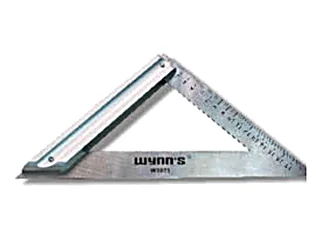 |
W3070 | ฉากสามเหลี่ยมสแตนเลสSTAINLESS TRIANGLE RULER ทุกเบอร์ในตระกูลนี้หน้าตาเหมือนกัน ต่างที่ขนาด |
120mm | 10/100 | STAINLESS |
| W3071 | 180mm | 10/100 | STAINLESS |
ลูกดิ่งวัดระดับ HIGH CLASS PLUMB BOB 3 รายการ
- ได้ค่าแนวดิ่งจากจุดอ้างอิงบนพื้นแน่นอน
- สะดวกเมื่อวัดระยะจากพื้นที่สูง
- ผลิตได้มาตรฐานทิ้งดิ่งได้แม่นยำ คงทน คุ้มค่า
| รูป | รหัส | ชื่อสินค้า | ขนาด | จำนวน/ลัง |
|---|---|---|---|---|
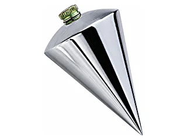 |
W0476B | ลูกดิ่งวัดระดับHIGH CLASS PLUMB BOB ทุกเบอร์ในตระกูลนี้หน้าตาเหมือนกัน ต่างที่ขนาด |
300g | 12/72 |
| W0476C | 400g | 10/60 | ||
| W0476D | 500g | 10/60 |
เจอรหัสที่ต้องการแล้ว? กดที่รหัสเพื่อถามราคา
กดที่รหัสสินค้าในตาราง ระบบจะเปิด LINE พร้อมข้อความให้แล้ว หรือทักมาบอกรายการที่ต้องการก็ได้ ทีมงานเช็คสต็อกและแจ้งราคาส่งให้